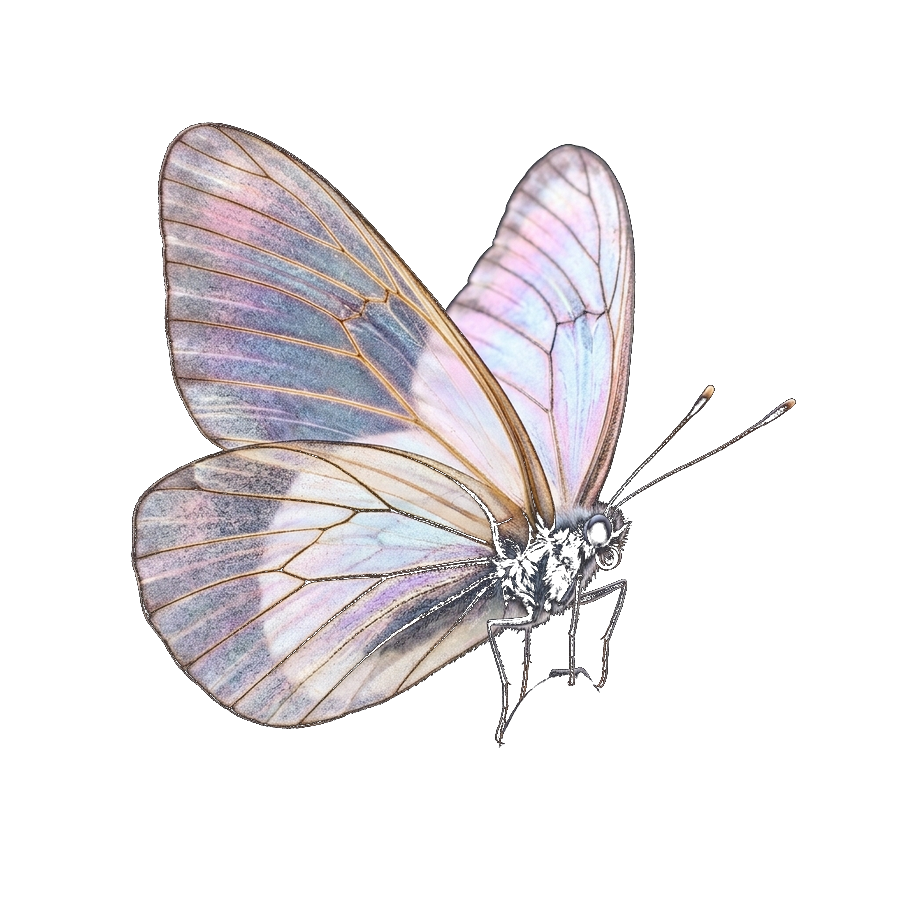
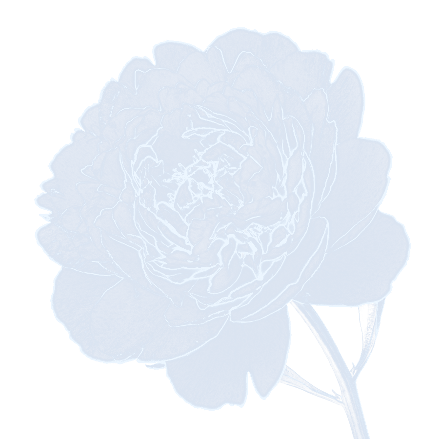
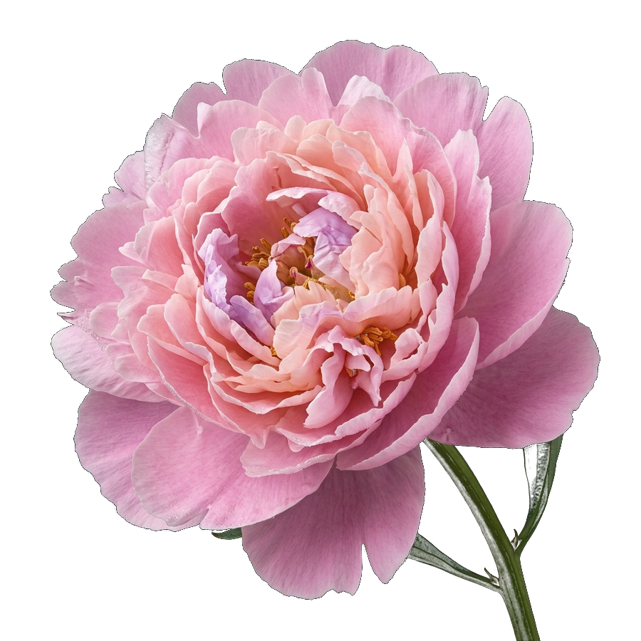
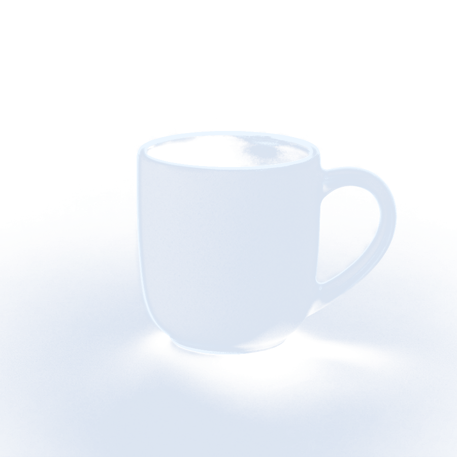
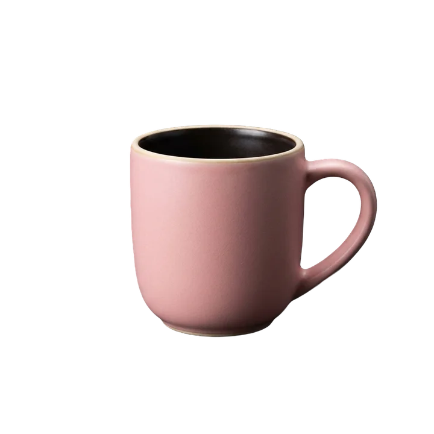

Drag. Tap. Bloom.
Drag any file, tap a key ( Shift16.0000.key · key.shift by default), and a 3D glass flower28.7896.543 · flower.glb of 10 tools + a Convert00.0000.dome · convert dome opens under your cursor. Drop the file on a petal.
One file, from folder to cut-out in a single gesture.


mug no bg.png petal.output · on this PCTen tools around a Convert center dome.
A liquid-glass drop that clings, stretches, and glances.
Tap Ctrl twice. Ask about your files in plain English or Hinglish.
Petal Ask shows you exactly what will happen first; removing moves files to the Recycle Bin with one-click Undo (Ctrl+Z), and never touches:
Nothing leaves your PC.
Everything runs on your PC. Nothing is uploaded. Remove background uses a local AI model; OCR uses Windows' own engine.
Motion: Auto / Full / Calm.
Idle uses well under 1% of the CPU; animations cap themselves on 144 Hz screens. Toggle Calm below to visibly calm this website's own animations too.
Bring Petal to your desktop.
Not code-signed yet — here is what Windows may show.
The installer isn't code-signed yet, so Windows may show "Windows protected your PC"; kindly choose More info → Run anyway.